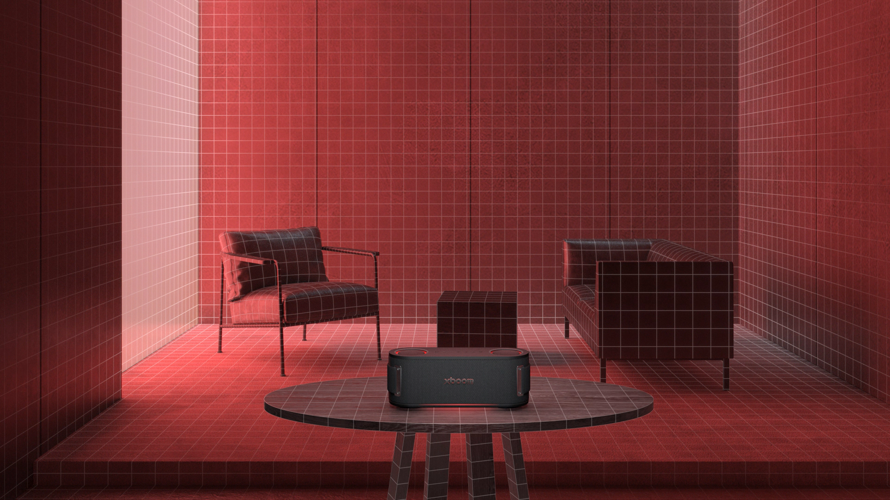

Lar, Conectado Lar
Foque mais no que importa. As soluções LG AI Home são projetadas para tornar sua casa ainda mais confortável. A Inteligência Afetiva LG está lá para cuidar de todos na sua casa de forma atenciosa, aliviando preocupações para que você viva de maneira mais genuína e humana.
![A woman lies on her side, sleeping in bed, as the glowing LG AI device greets her with 'Good morning.' A dog walks past the LG StanbyMe screen displaying the words 'Good morning.' A woman slides open a frosted glass door and enters. Inside the laundry room, a boy is placing laundry into the LG washing machine. A man and a woman lie intertwined on the living room sofa. A soccer match is playing on the TV screen. A woman and a man are hugging each other joyfully while having a conversation. The lights and TV are on, then they automatically turn off one by one. The LG robot vacuum starts moving across the floor.](./assets/images/lifes-good-campaign-2025-live-human-lgcom-ai-home-img-kv-video-thumb.png)
Inteligência Afetiva
O que torna uma casa mais humana?
Como a aparência expressa seu estilo?
Como o ambiente ajuda você a relaxar?
Como as memórias preenchem o espaço?
Os dispositivos inteligentes LG, com a Inteligência Afetiva LG, são otimizados para aprender e analisar seus padrões de vida físicos e emocionais, garantindo que você aproveite seu tempo em casa como deve ser—lar doce lar.

A próxima geração da LG AI TV.
LG OLED
A próxima geração da LG AI TV.
Complete sua experiência com AI usando o AI Magic Remote, que possui um botão dedicado à AI. Experimente a LG AI TV, que reconhece você, se adapta a você e cuida de você. Sua única tarefa é aproveitar o show.
Explorar funções chave
Aliviando sua carga
pauseLG WashTower
Aliviando sua carga
A LG AI dá um novo significado a "configurar e esquecer" com a tecnologia AI DD™. Ela detecta a quantidade da carga e o tipo de tecido para otimizar cada lavagem com o pressionar de um botão, permitindo que você deixe toda a lavagem para a LG resolver.
Explorar funções chave

Envolva seu espaço com som e luz,
otimizados pela AI da LG.
LG XBOOM
Envolva seu espaço com som e luz, otimizados pela AI da LG.
Som e estilo se unem para proporcionar um impacto sonoro poderoso o dia todo e a noite toda.
Explorar funções chave
O ajudante secreto da casa.
pauseLG CordZero™
O ajudante secreto da casa.
LG CordZero™ All-in-one Robot Vacuum — sua solução definitiva de limpeza. Ele limpa cada canto do seu espaço e até se limpa sozinho, para que você possa aproveitar e se livrar das tarefas diárias.
*Este produto ainda não está disponível.
Explorar funções chave
Assistindo com variedade
pauseLG StanbyME
Assistindo com variedade
Bonito, funcional e flexível—LG StanbyME, a tela sensível ao toque inteligente e sem fio, permite que você aproveite o conteúdo do seu jeito, em qualquer espaço, trabalhando ou descansando.
Saiba Mais*Todas as imagens simuladas para fins ilustrativos.
*Disponibilidade de recursos.
-
LG OLED
AI Magic Remote
- - O design, a disponibilidade e as funções do AI Magic Remote podem variar de acordo com a região e o idioma suportado, mesmo para o mesmo modelo.
- - É necessária uma conexão com a internet para o uso.
- - O reconhecimento de voz por AI é fornecido apenas em países que oferecem suporte a NLP (Processamento de Linguagem Natural) em seu idioma nativo.
AI Voice ID
- - Conteúdo reduzido ou limitado pode ser exibido dependendo da região e da conectividade da rede.
- - O suporte ao Voice ID pode variar de acordo com a região e o país e está disponível em TVs OLED, QNED, NanoCell e UHD lançadas a partir de 2024.
- - O Voice ID está disponível para LG Apps, Home, Home Hub, LG Fitness, Sports Alert, Home Office, Music, Games e PPW.
AI Search
- - O AI Search está disponível em TVs OLED, QNED, NanoCell e UHD lançadas a partir de 2024.
- - Os EUA e a Coreia utilizam o modelo LLM.
AI Chatbot
- - É necessária uma conexão com a internet.
- - O AI Chatbot está disponível em países que oferecem suporte a NLP (Processamento de Linguagem Natural) em seu idioma nativo.
- - É possível vincular o AI Chatbot ao atendimento ao cliente e aos contatos móveis.
AI Concierge
- - Os menus e aplicativos compatíveis podem variar de acordo com o país.
- - Os menus exibidos podem ser diferentes no lançamento.
- - As recomendações de palavras-chave variam conforme o aplicativo e a hora do dia.
-
LG WashTower
- *Testado pela Intertek em novembro de 2023. Comparado ao ciclo de Algodão, o ciclo AI Wash mostrou uma melhoria no cuidado com os tecidos e uma redução no consumo de energia com uma carga mista de 3 kg de tecidos delicados (camisas e blusas de malha, camisetas funcionais, saias de chiffon, shorts de poliéster, etc.) (F4X7VYP15). Os resultados podem variar dependendo do peso e dos tipos de tecido da lavanderia e/ou outros fatores. A detecção por AI é ativada quando a carga é inferior a 3 kg. A detecção por AI não é ativada quando a opção Vapor é selecionada. O AI Wash deve ser usado apenas com tipos de tecido semelhantes [nem todos os tecidos são detectados] e detergente adequado.
-
LG StanbyME
- *Altura: 1.265mm~1.065mm com base na tela horizontal.
- *Rotação: Total de 180˚ (90˚ no sentido horário, 90˚ no sentido anti-horário) / Giro: Total de 130˚ (65˚ para a esquerda, 65˚ para a direita) / Inclinação: 25˚ para frente, 25˚ para trás.
- *O modo de tela vertical pode não ser compatível com todos os aplicativos.
- *O modo de tela vertical pode funcionar de maneira diferente dependendo do aplicativo usado.
- *O StanbyME deve estar conectado a uma rede sem fio para suportar serviços de streaming.
- *O StanbyME suporta a plataforma webOS (não suporta Google Play Store ou Apple Store).
- *A funcionalidade da tela sensível ao toque varia de acordo com o aplicativo e pode não ser compatível com todos os aplicativos.
- *Aplicativos que não podem ser operados por toque podem ser controlados usando o controle remoto fornecido.
- *O controle remoto fornecido funciona apenas com produtos StanbyME.
- *A funcionalidade NFC funciona após o aplicativo ThinQ ser carregado em um dispositivo móvel e o dispositivo ser conectado ao StanbyME via Wi-Fi (o suporte pode variar dependendo do dispositivo móvel).
- *O espelhamento de tela móvel (mirroring) está disponível apenas em dispositivos Android (iOS e macOS não são compatíveis).
- *As condições de conexão podem variar dependendo do ambiente de rede do usuário.
- *Dependendo das especificações e do fabricante do dispositivo móvel, os métodos de espelhamento de tela (mirroring) e a qualidade da imagem podem variar.